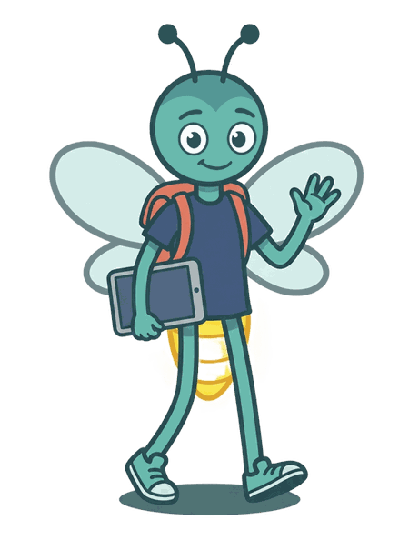

Lumi is in sixth grade now, and so are you! This year you will reason with ratios and rates, divide fractions by fractions, meet negative numbers, write expressions and equations with variables, find areas and volumes, and ask statistical questions about real data. You can listen to every instruction, and in every game you connect ideas and explain why.
¡Lumi ya está en sexto grado, igual que tú! Este año vas a razonar con razones y tasas, dividir fracciones entre fracciones, conocer los números negativos, escribir expresiones y ecuaciones con variables, hallar áreas y volúmenes y hacer preguntas estadísticas sobre datos reales. Puedes escuchar cada instrucción y, en cada juego, relacionas ideas y explicas por qué.
As in fifth grade, this collection uses English as its main language, to give more practice with academic language. The games, the stories and the reading are in English. The Ayuda en español button shows the instruction or the question in Spanish so you can understand the task, and you can use it whenever you need it. The game itself stays in English.
¿Por qué desde quinto grado se usa el inglés? A partir de quinto, esta colección usa el inglés como lengua principal para ampliar la práctica del lenguaje académico. Los juegos, los cuentos y la lectura son en inglés. El botón «Ayuda en español» muestra la consigna o la pregunta en español para que entiendas la tarea, y puedes usarlo siempre que lo necesites. El juego sigue en inglés.
The twelve modules are aligned with the five domains of the Illinois sixth grade mathematics standards (6.RP, 6.NS, 6.EE, 6.G and 6.SP). The first two, Ratios and rates and Dividing fractions by fractions, are ready; the others will be added one by one. They can be chosen according to each child's needs, although some modules require earlier knowledge. Suggested routes:
Los doce módulos están alineados con los cinco dominios de los estándares de matemáticas de sexto grado de Illinois (6.RP, 6.NS, 6.EE, 6.G y 6.SP). Los dos primeros, Razones y tasas y Dividir fracciones entre fracciones, ya están listos; los demás se irán añadiendo uno a uno. Se pueden seleccionar según las necesidades del alumno, aunque algunos requieren conocimientos previos. Rutas sugeridas: las razones (1) antes de las variables dependientes e independientes (9); los factores y múltiplos (4) antes de dividir fracciones (2) y de las expresiones (7); los números negativos (5) antes del plano de cuatro cuadrantes (6); las preguntas estadísticas (11) antes de representar y resumir datos (12).
Third grade asked for strategy, fourth grade asked the child to justify, and fifth grade to generalize. In sixth grade the child connects representations and reasons with relationships: the same situation appears as words, a ratio table, a double number line, a graph and, later, an equation, and the child chooses the one that helps most. The games ask for precise language (“for every”, “per”, “out of”), name the typical mistakes so the child can recognize them, and in “Who is right?” at the Challenge level the child critiques an argument and chooses the reason. The challenge should still fit what each child can do, not only their grade.
En tercero los juegos pedían estrategia, en cuarto justificar y en quinto generalizar. En sexto el niño relaciona representaciones y razona con relaciones: la misma situación aparece con palabras, en una tabla de razones, en una recta numérica doble, en una gráfica y, más adelante, en una ecuación, y el niño elige la que más le ayuda. Los juegos piden un lenguaje preciso («por cada», «por», «de cada»), nombran los errores típicos para que el niño los reconozca y, en «¿Quién tiene razón?», en el nivel Reto, el niño critica un argumento y elige la razón. El reto sigue ajustándose a lo que cada niño puede hacer, no solo a su grado.
As in fifth grade, everything is in English. The “Ayuda en español” button (off at the start) shows the instruction or the question in Spanish, with its own speaker button; the answers, hints and feedback stay in English. The choice travels with the link from this page to each module and is not saved on the device.
Como en quinto, todo es en inglés. El botón «Ayuda en español» (apagado al inicio) muestra la consigna o la pregunta en español, con su propia bocina; las respuestas, las pistas y los comentarios siguen en inglés. La elección pasa de esta página a cada módulo en el enlace y no se guarda en el aparato.
| Module | Standard | What it covers |
|---|---|---|
| Ratios and rates | 6.RP.1 – 6.RP.3 | Ratio language; unit rates; tables of equivalent ratios and their graphs; unit pricing and constant speed; percent as a rate per 100; converting units |
| Dividing fractions by fractions | 6.NS.1 | Interpret and compute quotients of fractions with models and equations |
| Multi-digit division and decimals | 6.NS.2, 6.NS.3 | Fluently divide multi-digit numbers; add, subtract, multiply and divide decimals with the standard algorithms |
| Factors, multiples and the distributive property | 6.NS.4 | Greatest common factor, least common multiple, and the distributive property |
| Negative numbers and absolute value | 6.NS.5 – 6.NS.7 | Positive and negative numbers in context; opposites; ordering; absolute value |
| The four-quadrant coordinate plane | 6.NS.6, 6.NS.8 | Points in all four quadrants, reflections across the axes, distances with the same coordinate |
| Expressions with variables and exponents | 6.EE.1 – 6.EE.4 | Whole-number exponents; write, read and evaluate expressions; equivalent expressions |
| Equations and inequalities | 6.EE.5 – 6.EE.8 | Solving as finding values that make it true; x + p = q and px = q; inequalities on a number line |
| Dependent and independent variables | 6.EE.9 | Two quantities that change together, with tables, graphs and equations |
| Area, surface area and volume | 6.G.1 – 6.G.4 | Area of triangles and polygons; volume with fractional edges; polygons on the coordinate plane; nets and surface area |
| Statistical questions and distributions | 6.SP.1 – 6.SP.3 | Recognizing statistical questions; center, spread and overall shape |
| Displaying and summarizing data | 6.SP.4, 6.SP.5 | Dot plots, histograms and box plots; mean, median, range and interquartile range in context |